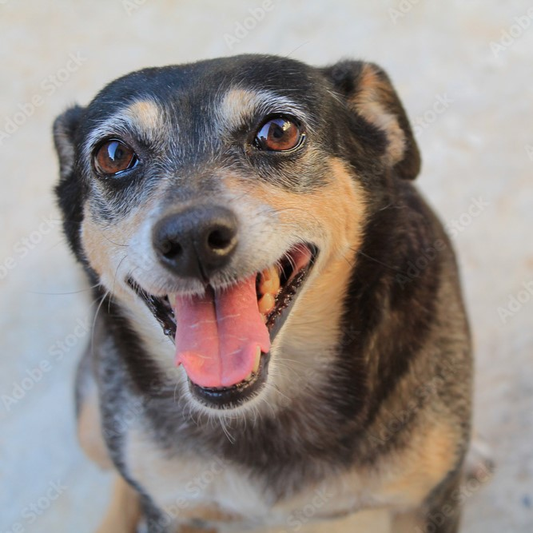
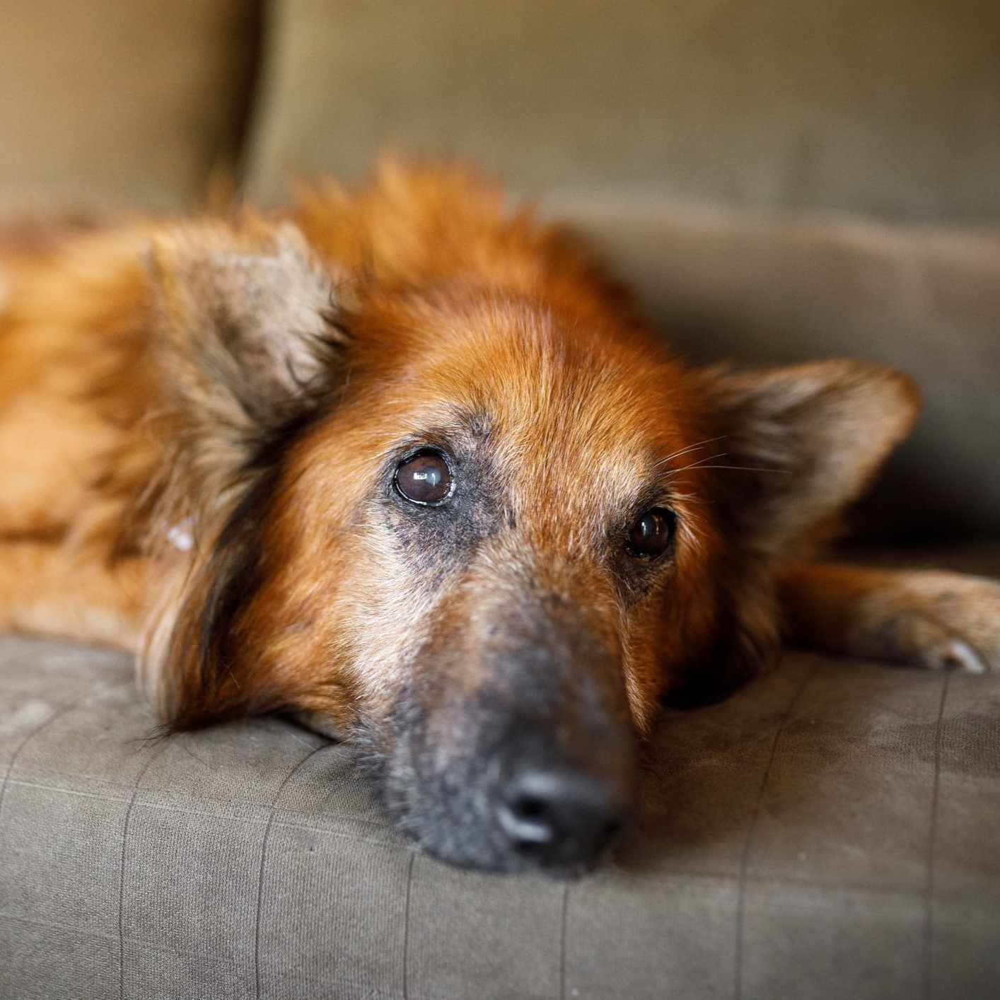
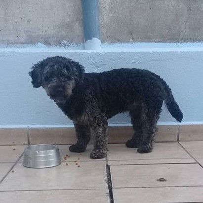
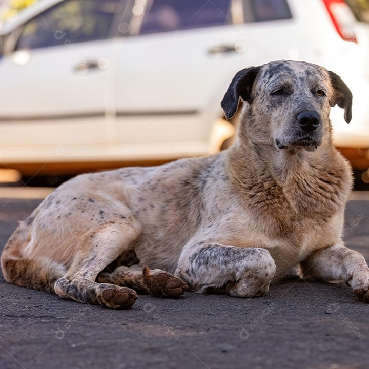
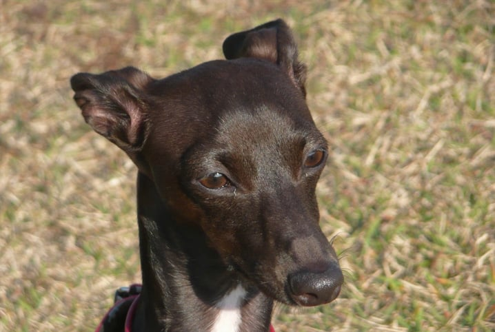

Encontre seu pet perdido Filtrar ☰ Filtros Raça Selecione Border Collie Bulldog Francês Chihuahua Golden Retriever Pinscher Cidade do animal Selecione Campinas Hortolândia Sumaré Valinho Idade Selecione Idoso Adulto Jovem Filhote     